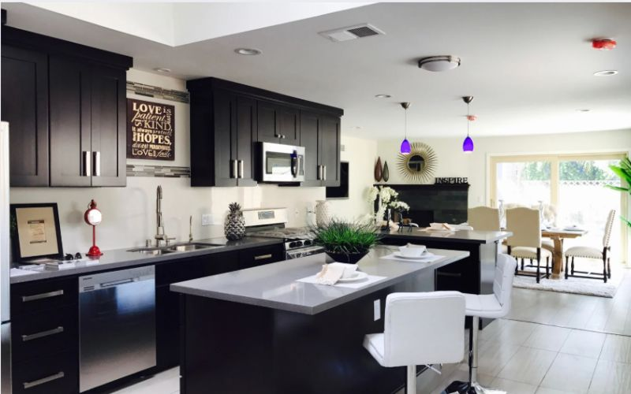
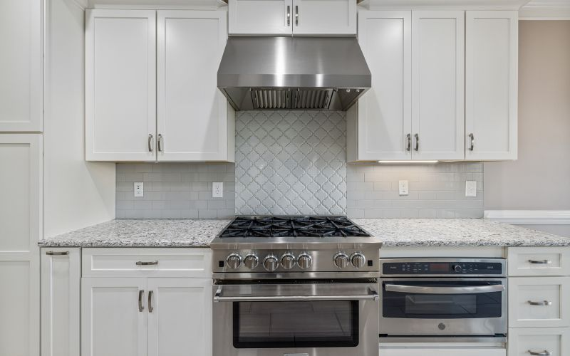
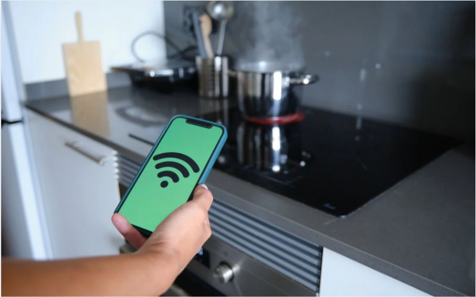
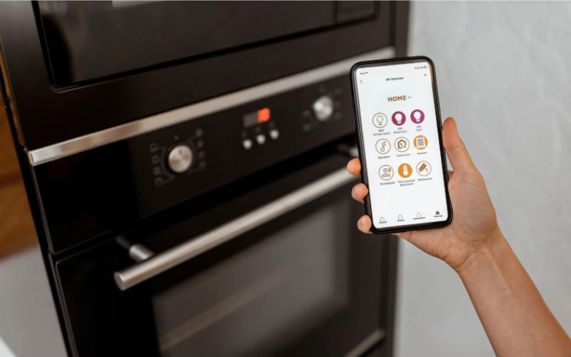

Thiết bị nhà bếp thông minh đáng mua nhất hiện nay
Trong nhịp sống hiện đại, sự xuất hiện của thiết bị nhà bếp thông
minh đã thay đổi cách chúng ta tương tác với không gian bếp. Hãy thử
tưởng tượng một ngày bận rộn, bạn không cần lo lắng về việc theo dõi
nồi cơm hay kiểm tra thực phẩm trong tủ lạnh. Thay vào đó, với một
vài thao tác trên điện thoại, mọi thứ được điều chỉnh hoàn hảo.
Chính những tiện ích này khiến các thiết bị nhà bếp thông minh trở
thành xu hướng không thể bỏ qua.
Bài viết hôm nay Flexhouse VN sẽ giới thiệu đến bạn danh sách 101
thiết bị nhà bếp thông minh đáng mua nhất hiện nay, giúp không gian
bếp của bạn trở nên hiện đại, tiện nghi và hiệu quả hơn bao giờ hết.
Thiết bị nhà bếp thông minh là gì?
Căn bếp hiện đại không chỉ là nơi nấu nướng mà còn là không gian
sống thông minh, tiện nghi. Thiết bị nhà bếp thông minh chính là yếu
tố then chốt tạo nên sự thay đổi này. Vậy thiết bị nhà bếp thông
minh là gì?
Đơn giản, đó là những thiết bị được tích hợp công nghệ hiện đại, cho
phép tự động hóa hoặc điều khiển từ xa các hoạt động trong bếp. Kết
nối internet, smartphone, chúng mang đến trải nghiệm nấu nướng tiện
lợi và hiệu quả. Nhà bếp thông minh không chỉ là xu hướng mà còn là
giải pháp cho cuộc sống bận rộn.

Xu hướng thiết bị nhà bếp thông minh năm nay
Lợi ích của thiết bị nhà bếp thông minh
Việc đầu tư vào thiết bị nhà bếp thông minh không chỉ là chạy theo
xu hướng công nghệ mà còn mang lại những lợi ích thiết thực, nâng
cao chất lượng cuộc sống của gia đình bạn. Cụ thể:
Tiết kiệm thời gian, công sức: Tự động hóa các công việc, không
cần canh lửa, căn giờ.
Nấu ăn ngon, chính xác: Kiểm soát nhiệt độ, thời gian chuẩn xác.
An toàn: Giảm thiểu rủi ro trong quá trình nấu nướng.
Tiết kiệm năng lượng: Tối ưu hóa sử dụng năng lượng, giảm chi phí.
Không gian bếp hiện đại: Nâng tầm đẳng cấp cho căn bếp.
Như vậy, với những lợi ích vượt trội, thiết bị nhà bếp thông minh
xứng đáng là sự lựa chọn hàng đầu cho căn bếp hiện đại.
Phân loại thiết bị nhà bếp thông minh theo chức năng
Để hiểu rõ hơn về thiết bị nhà bếp thông minh, chúng ta có thể phân
loại chúng dựa trên chức năng chính. Việc này giúp bạn dễ dàng lựa
chọn những thiết bị phù hợp với nhu cầu của gia đình.
Nấu nướng: Bếp từ, lò nướng, nồi chiên không dầu, lò vi sóng, máy
hút mùi, nồi cơm điện, máy làm sữa hạt, máy ép chậm…
Bảo quản thực phẩm: Tủ lạnh, tủ đông, máy lọc nước, máy hút chân
không…
Dọn dẹp: Máy rửa bát, robot hút bụi lau nhà…
Mỗi loại thiết bị đều có ưu điểm riêng, đáp ứng nhu cầu đa dạng của
người dùng, giúp tối ưu hóa trải nghiệm nấu nướng và tận hưởng cuộc
sống tiện nghi.
Top 101 thiết bị nhà bếp thông minh nên sắm ngay
Nhà bếp thông minh là xu hướng không thể thiếu trong cuộc sống hiện
đại. Thiết bị nhà bếp thông minh giúp nâng tầm trải nghiệm nấu nướng
và biến căn bếp thành không gian lý tưởng. Dưới đây là danh sách các
thiết bị đáng đầu tư:

Sản phẩm thiết bị nhà bếp thông minh nên có
Thiết bị nấu nướng thông minh
Khu vực nấu nướng là trái tim của căn bếp. Thiết bị nhà bếp thông
minh giúp bạn chế biến món ăn ngon lành dễ dàng và hiệu quả hơn.
Bếp từ thông minh
Mang lại sự tiện lợi và an toàn tuyệt đối với các tính năng điều
khiển giọng nói, hẹn giờ, tự động ngắt khi quá nhiệt. Thương hiệu
nổi tiếng: Bosch, Teka, Xiaomi,… Bếp từ thông minh giúp bạn nấu ăn
nhanh chóng, an toàn và tiết kiệm năng lượng.
Lò nướng thông minh
Nướng bánh, nướng thịt hoàn hảo với các chế độ cài đặt sẵn và kiểm
soát nhiệt độ chính xác. Thương hiệu nổi tiếng: Bosch, Teka,
Electrolux,… Lò nướng thông minh giúp bạn tạo ra những món nướng
thơm ngon, chín đều mà không cần tốn nhiều công sức.
Nồi chiên không dầu thông minh
Giúp bạn chiên rán thực phẩm giòn tan mà không cần dùng dầu mỡ, tốt
cho sức khỏe. Thương hiệu nổi tiếng: Philips, Tefal, Cosori,… Nồi
chiên không dầu thông minh là lựa chọn hoàn hảo cho những ai quan
tâm đến sức khỏe và muốn thưởng thức món chiên rán thơm ngon mà
không lo dầu mỡ.
Lò vi sóng thông minh
Không chỉ hâm nóng, mà còn có thể nấu, nướng, hấp với nhiều chế độ
tự động, tiết kiệm thời gian và đa dạng hóa thực đơn. Thương hiệu
nổi tiếng: Panasonic, Samsung, LG,… Lò vi sóng thông minh là trợ thủ
đắc lực, giúp bạn chế biến nhiều món ăn khác nhau một cách nhanh
chóng và tiện lợi.
Máy hút mùi thông minh
Giữ không gian bếp luôn trong lành nhờ khả năng tự động điều chỉnh
công suất hút. Thương hiệu nổi tiếng: Bosch, Teka, Cata,… Máy hút
mùi thông minh loại bỏ mùi hôi, khói bụi, mang lại không gian bếp
thoáng đãng và sạch sẽ.
Với sự đa dạng của thiết bị nhà bếp thông minh cho nấu nướng, bạn có
thể thỏa sức sáng tạo và tận hưởng niềm đam mê ẩm thực.
Thiết bị bảo quản thực phẩm thông minh
Bảo quản thực phẩm tối ưu là yếu tố quan trọng để đảm bảo sức khỏe
gia đình. Thiết bị nhà bếp thông minh sẽ hỗ trợ bạn trong việc này.
Tủ lạnh thông minh: Kết nối internet, hiển thị công thức, quản lý
thực phẩm, thậm chí đặt hàng online, mang đến trải nghiệm công
nghệ đỉnh cao. Thương hiệu nổi tiếng: Samsung, LG, Hitachi,… Tủ
lạnh thông minh giúp bạn bảo quản thực phẩm tươi ngon lâu hơn và
quản lý thực phẩm hiệu quả.
Tủ đông thông minh: Bảo quản thực phẩm đông lạnh hiệu quả, tiết
kiệm năng lượng và có thể điều khiển từ xa qua smartphone. Thương
hiệu nổi tiếng: Aqua, Sanaky, Electrolux,… Tủ đông thông minh giúp
bạn dự trữ thực phẩm đông lạnh một cách tiện lợi và tiết kiệm.
Máy lọc nước thông minh: Cung cấp nguồn nước sạch tinh khiết, tự
động sục rửa, báo thay lõi và kết nối smartphone, đảm bảo sức khỏe
cho cả gia đình. Thương hiệu nổi tiếng: Karofi, Kangaroo, Coway,…
Máy lọc nước thông minh là giải pháp hoàn hảo cho nguồn nước sạch
và an toàn.
Việc bảo quản thực phẩm đúng cách sẽ giúp giữ trọn vẹn dưỡng chất và
hương vị của món ăn.
Thiết bị dọn dẹp thông minh
Dọn dẹp nhà bếp trở nên nhẹ nhàng hơn bao giờ hết với sự hỗ trợ của
thiết bị nhà bếp thông minh.
Máy rửa bát thông minh: Tiết kiệm thời gian và công sức dọn dẹp
sau bữa ăn. Thương hiệu nổi tiếng: Bosch, Electrolux, Hafele,… Máy
rửa bát thông minh giúp bạn tiết kiệm thời gian, công sức và tận
hưởng sự tiện nghi.
Robot hút bụi lau nhà (cho khu vực bếp): Vệ sinh sàn bếp tự động,
tiết kiệm thời gian và công sức. Thương hiệu nổi tiếng: Ecovacs,
iRobot, Roborock,… Robot hút bụi lau nhà giúp sàn bếp luôn sạch
bóng mà không cần bạn động tay.
Việc dọn dẹp nhà bếp sẽ không còn là nỗi ám ảnh với sự hỗ trợ của
những thiết bị thông minh này.
Phụ kiện tủ bếp thông minh
Phụ kiện tủ bếp thông minh là yếu tố không thể thiếu để hoàn thiện
một nhà bếp thông minh đúng nghĩa. Flexhouse VN tự hào là đơn vị
cung cấp các giải pháp phụ kiện tủ bếp thông minh chất lượng cao.
Hệ thống ray trượt thông minh: Đóng mở tủ bếp êm ái, nhẹ nhàng và
tận dụng tối đa không gian lưu trữ. Chất liệu cao cấp, bền bỉ,
chống gỉ sét. Hệ thống ray trượt thông minh giúp bạn sử dụng tủ
bếp một cách thuận tiện và hiệu quả hơn.
Giá đựng bát đĩa thông minh: Tối ưu không gian và dễ dàng lấy, cất
bát đĩa với chất liệu inox 304 sáng bóng, chống ẩm mốc. Giá đựng
bát đĩa thông minh giúp căn bếp của bạn luôn gọn gàng và ngăn nắp.
Thùng rác thông minh: Đóng/mở tự động, khử mùi hiệu quả, giữ vệ
sinh cho căn bếp. Thùng rác thông minh giúp bạn dễ dàng xử lý rác
thải và giữ cho không gian bếp luôn sạch sẽ.
Hệ thống đèn chiếu sáng tủ bếp thông minh: Tiết kiệm điện năng và
tạo điểm nhấn sang trọng cho căn bếp với đèn led âm tủ, đèn cảm
ứng, tự động bật/tắt. Hệ thống đèn chiếu sáng thông minh giúp bạn
dễ dàng quan sát và thao tác trong bếp.
Bên cạnh đó Flexhouse còn cung cấp các loại giá gia vị, kệ góc xoay,
hệ thống nâng hạ thông minh,… Phụ kiện tủ bếp thông minh của
Flexhouse VN sẽ giúp bạn hoàn thiện không gian bếp hiện đại và tiện
nghi.
Kinh nghiệm lựa chọn thiết bị nhà bếp thông minh
Đầu tư vào thiết bị nhà bếp thông minh là quyết định quan trọng, đòi
hỏi sự cân nhắc kỹ lưỡng. Dưới đây là một số kinh nghiệm giúp bạn
lựa chọn được những sản phẩm phù hợp nhất với nhu cầu và ngân sách
của gia đình.

Thiết bị nhà bếp thông minh nâng tầm không gian bếp
Xác định nhu cầu và ngân sách
Trước khi mua bất kỳ thiết bị nhà bếp thông minh nào, hãy xác định
rõ nhu cầu sử dụng của gia đình. Bạn cần những thiết bị nào? Tần
suất sử dụng ra sao? Ngân sách bạn dành cho việc này là bao nhiêu?
Việc xác định rõ ràng nhu cầu và ngân sách sẽ giúp bạn tránh lãng
phí và lựa chọn được sản phẩm phù hợp nhất.
Lựa chọn thương hiệu uy tín
Thương hiệu uy tín đồng nghĩa với chất lượng sản phẩm và dịch vụ bảo
hành tốt. Nên ưu tiên lựa chọn thiết bị nhà bếp thông minh từ các
thương hiệu nổi tiếng như Bosch, Teka, Samsung, LG, Philips,… để đảm
bảo độ bền và hiệu suất hoạt động ổn định.
Kiểm tra tính năng và công nghệ
Mỗi thiết bị nhà bếp thông minh đều được tích hợp những tính năng và
công nghệ khác nhau. Hãy tìm hiểu kỹ về các tính năng này để đảm bảo
chúng đáp ứng được nhu cầu sử dụng của bạn. Ví dụ, nếu bạn muốn điều
khiển thiết bị từ xa, hãy chọn những sản phẩm có kết nối Wi-Fi và
ứng dụng di động.
Lưu ý đến kích thước và kiểu dáng
Kích thước và kiểu dáng của thiết bị cần phù hợp với không gian bếp
của bạn. Hãy đo đạc kỹ lưỡng trước khi mua để đảm bảo thiết bị vừa
vặn và hài hòa với tổng thể không gian.
Chế độ bảo hành và hậu mãi
Chế độ bảo hành và hậu mãi là yếu tố quan trọng phản ánh uy tín của
thương hiệu và chất lượng sản phẩm. Hãy lựa chọn những sản phẩm có
chế độ bảo hành rõ ràng, dài hạn và dịch vụ hậu mãi chu đáo.
Lựa chọn thiết bị nhà bếp thông minh phù hợp không chỉ giúp bạn tiết
kiệm thời gian, công sức mà còn nâng tầm trải nghiệm nấu nướng, biến
căn bếp thành không gian sáng tạo và đầy cảm hứng.
Địa chỉ mua thiết bị nhà bếp thông minh uy tín
Sau khi đã lựa chọn được những thiết bị nhà bếp thông minh phù hợp,
việc tìm kiếm một địa chỉ mua hàng uy tín là vô cùng quan trọng.
Flexhouse VN tự hào là đối tác của nhiều thương hiệu thiết bị nhà
bếp thông minh nổi tiếng thế giới, cam kết mang đến cho khách hàng
những sản phẩm chất lượng cao cùng dịch vụ chuyên nghiệp.
Không chỉ cung cấp đa dạng các loại thiết bị nhà bếp thông minh từ
các thương hiệu hàng đầu, Flexhouse VN còn sở hữu bộ sưu tập phụ
kiện tủ bếp hiện đại, giúp bạn hoàn thiện không gian bếp một cách
tinh tế và tiện nghi. Từ bếp từ, lò nướng, tủ lạnh thông minh đến hệ
thống ray trượt, giá bát đĩa, thùng rác thông minh, Flexhouse VN đều
có thể đáp ứng mọi nhu cầu của bạn.

Ứng dụng công nghệ trong thiết bị nhà bếp thông minh
Cam kết chất lượng và dịch vụ
Sản phẩm chính hãng: Flexhouse VN cam kết cung cấp 100% sản phẩm
chính hãng, có nguồn gốc xuất xứ rõ ràng, đảm bảo chất lượng và độ
bền.
Chế độ bảo hành uy tín: Mọi sản phẩm đều được bảo hành chính hãng
theo tiêu chuẩn của nhà sản xuất, mang đến sự an tâm tuyệt đối cho
khách hàng.
Dịch vụ chăm sóc khách hàng tận tâm: Đội ngũ nhân viên chuyên
nghiệp của Flexhouse VN luôn sẵn sàng tư vấn, hỗ trợ khách hàng
lựa chọn sản phẩm phù hợp nhất với nhu cầu và ngân sách.
Giao hàng nhanh chóng: Flexhouse VN cung cấp dịch vụ giao hàng
nhanh chóng, tiện lợi trên toàn quốc, giúp bạn tiết kiệm thời gian
và công sức.
Đa dạng hình thức thanh toán: Hỗ trợ nhiều hình thức thanh toán
linh hoạt, đáp ứng mọi nhu cầu của khách hàng.
Lựa chọn Flexhouse VN, bạn sẽ được
Trải nghiệm mua sắm dễ dàng, thuận tiện với đa dạng sản phẩm và
dịch vụ chuyên nghiệp.
Sở hữu những thiết bị nhà bếp thông minh chất lượng cao, chính
hãng với giá cả cạnh tranh.
Tận hưởng không gian bếp hiện đại, tiện nghi và đẳng cấp.
Hãy để Flexhouse VN đồng hành cùng bạn trên hành trình xây dựng nhà
bếp thông minh trong mơ! Liên hệ ngay với chúng tôi để được tư vấn
và nhận báo giá tốt nhất.